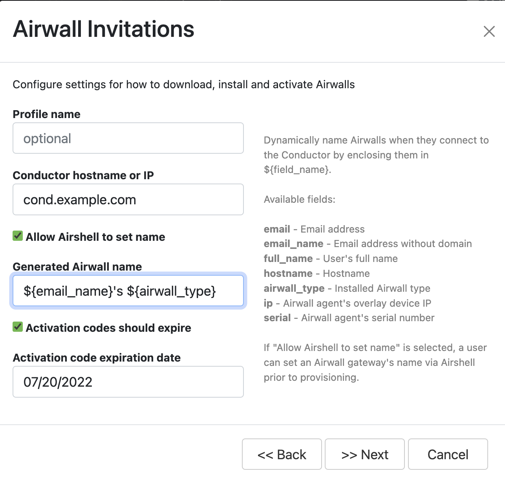

Send Airwall Invitations
You send Airwall Invitations to invite people to connect to your Airwall secure network. It can be as simple as sending the invitations to a list of email addresses. With a bit of preparation, though, you can also automatically set up device access and trust as people connect their devices.
Before you begin
- Gather the list of emails you want to send the invitations to.
- Make sure your Conductor email has been set up. See Configure Email Settings.
- If you want to require authenticated sessions, Set up User Authentication.
Send Airwall Invitations
The possibilities include setting up which Overlay networks people belong to, what groups they’re a part of, which Airwall Edge Services and devices they can access, and when a person’s access to your Airwall secure network expires.
Before you begin
- Gather email lists for the types of people you need to grant access to
- (Optional) Group emails by people who need the same access permissions.
- (Optional) Create Airwall groups for the people you want to add. For example, you may want Employees and Contractors Airwall groups.
- (Optional) Create tags for the types of people and access.
- (Optional) Create Smart Device Groups to automatically add people to Device groups as they activate their Airwall Agents and Servers.
By doing a bit more planning and preparation in the optional steps above, you will save time in making sure people are able to access the resources they need. For a walkthrough showing how to set up invitations that automatically provide guests with access to your secure network for 4 hrs, see Walkthrough – Send Expiring Guest Access Invitations
- Go to .
- If you have already sent invitations, you can open the drop down next to an invitation and select Use as template to send a similar invitation to more people. To create a new invitation, select New Airwall Invitations.
-
In v3.0.0 and later, select how you want to invite people. Select each
option to see a description.
- After you select how to invite users, you will need to enter the options for that type. For example, select users if inviting current users, or enter the email addresses for the people you want to connect to your Airwall secure network.
- Select Next.
-
Enter the options that are requested for your invitation type. Setting
these options automates more of the process for the people trying to
connect, as well as the administrator giving them access:
- Profile name – This is the name of the profile to create on the people’s Airwall Agents and Servers.
- Conductor hostname or IP – Sets the Conductor they connect to.
- Generated Airwall name – Sets the name the Airwall Agent or Server has when the user activates it. The default value sets it to the email address followed by their Airwall Agent or Server type. See the help when you select this box to see other options for autogenerating names.
- Activation codes should expire – Check or clear this box, and if checked, set the Activation code expiration date – Sets the date the Airwall Invitation expires.
Note: pre-2.2.8 Conductors also have: Install Package Location – Enter a place accessible to your invitees where you’ve downloaded the Airwall Agent or Server software, or point to the latest version in Airwall help: https://webhelp.tempered.io/webhelp/content/topics/downloads_latest.html - Select Next.
-
Enter Airwall Agent or Server-specific settings to automate people’s access as their devices
connect:
- Require authenticated Airwall session – Check this option to require people accessing your Airwall secure network to authenticate.
- Overlay device IP network (CIDR) – (Optional)
The network from which to assign IP addresses to devices as they
connect. Note: If you use the same IP network in subsequent Invitations, the Conductor intelligently continues incrementing IP addresses. For instance, if you send out one Invitation starting at 192.168.1.15 with 10 emails and then another with the same IP with 10 emails, they all just get a free IP from the network as they come online.
- Overlay device IP netmask – Enter the netmask for the overlay device IP.
- Overlay networks – (Optional) The overlay networks to add people's devices to.
- Device groups – Select the Device groups to add devices to.
-
Enter any additional settings to automate people’s access as their devices
connect:
- Use bypass gateway – If you want these users to use a specific bypass Airwall Gateway, select Specify bypass gateway, and then select the gateway you want them to use. You can also use the default bypass gateway set up in the Conductor, or not allow the use of a bypass gateway. For information on setting up bypass Airwall Gateways, see Backhaul Bypass and Configure an Airwall Gateway as a Bypass gateway.
- Bypass gateway – Select the bypass Airwall Gateway you want users getting this Airwall Invitation to use.
- Airwall groups – Select Airwall groups to add Airwall Agents and Servers to. For example, you might assign these Airwall Agents and Servers to the Employee, Admin, or Vendor group.
- People groups– Select People groups to add users to.
- Tags – Create or assign tags to people’s devices. For example, if you’re using tags to create Smart Device Groups that add people’s devices to the right overlays, enter these tags now. See Manage devices dynamically with Smart Device Groups.
- If you are generating Activation codes, select Generate and skip the rest of these steps.
- If you are inviting existing users or sending emails, select Next.
- Double-check the email addresses and make any needed changes to the invitation email. To help the people receiving Activation codes to connect, point them to one of these help topics: I have an Airwall Invitation or I have an Activation Code.
- Select Finish to send the invitations.